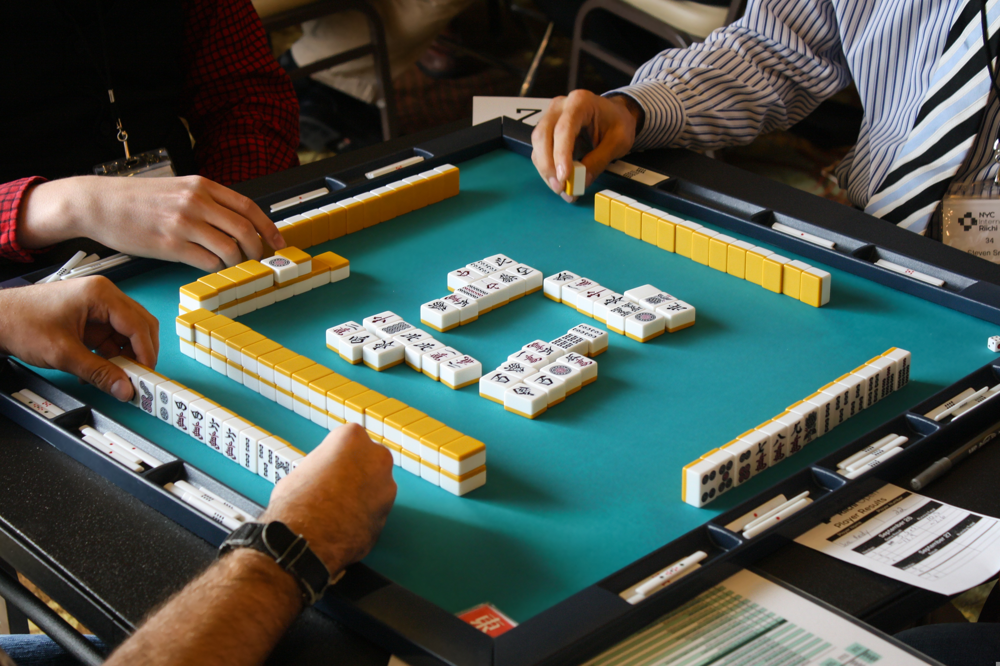

麻雀の基本ルール
和了の方法や流れを、初心者向けにわかりやすく解説します。
Beginner's Guide
ルール・役・点数計算をひと目で理解できるように、わかりやすく整理しました。
麻雀は、4人で行う中国発祥の伝統的なゲームです。プレイヤーは、手持ちの牌を使って役を作り、得点を競います。戦略や運が絡むため、初心者でも楽しめるゲームです。

和了の方法や流れを、初心者向けにわかりやすく解説します。
代表的な役の意味や条件を一覧で確認できます。
和了時の得点計算を簡単に理解できるように整理しました。
対局で大切な発声やマナーを確認できます。
役満へ近づくための流れや覚えるポイントをまとめました。